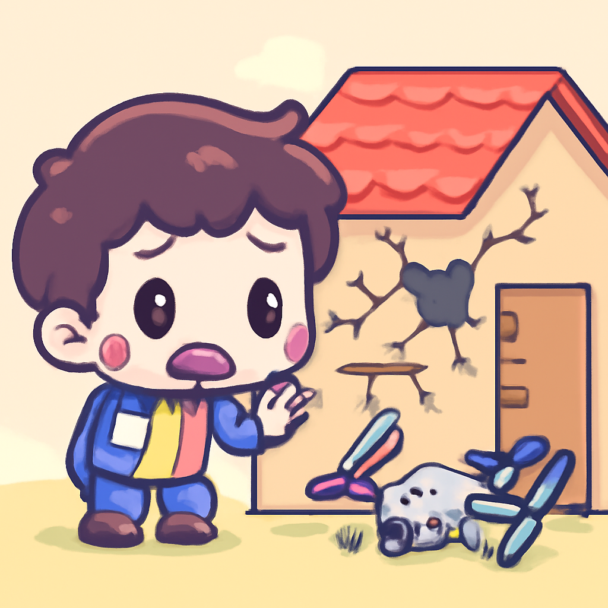
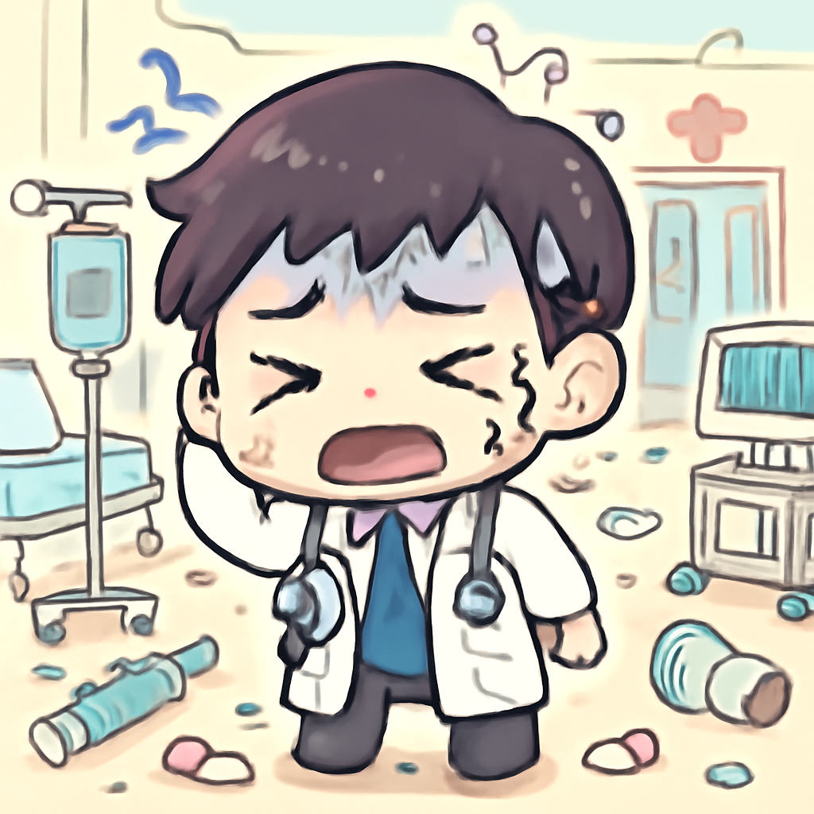

其一 · 美國 · 三國合作研發水下無人機技術
美國、英國和澳洲合作防衛海底通訊線
美國最近宣布，將與英國和澳洲合作研發水下無人機技術，主要目的是保護海底通訊線和提升海軍防禦能力。這項技術對於防範潛在的海底威脅至關重要，像是敵對國家可能的潛艇活動，讓這個合作看起來不只是科技進步，還是國防的必然選擇。海底的秘密，就等我們的無人機來揭曉！
🔗 原始新聞 ↗
2026-05-31 · 以古觀今，以笑抗愁
美國、英國和澳洲合作防衛海底通訊線
美國最近宣布，將與英國和澳洲合作研發水下無人機技術，主要目的是保護海底通訊線和提升海軍防禦能力。這項技術對於防範潛在的海底威脅至關重要，像是敵對國家可能的潛艇活動，讓這個合作看起來不只是科技進步，還是國防的必然選擇。海底的秘密，就等我們的無人機來揭曉！
🔗 原始新聞 ↗
羅馬尼亞一城市因無人機墜毀而人心惶惶

在羅馬尼亞東部的某個城市，最近清晨一架無人機墜入居民樓，讓當地居民驚恐不已，剛回家的他們正思考要不要再繼續待在這裡。這事件不僅讓人對戰爭的陰影感到不安，也讓人重新思考居住在戰爭邊緣的生活是什麼滋味。希望大家的房子都能安安穩穩，不要被偶爾的空中“來客”打擾！
🔗 原始新聞 ↗
剛果埃博拉疫情加劇，醫療團隊感到壓力山大

最近，剛果民主共和國的埃博拉疫情持續擴散，醫療慈善機構警告情況相當嚴峻。隨著感染案例激增，當地的醫療資源面臨嚴重短缺，這讓醫療工作者的壓力倍增。這則新聞提醒我們，全球公共健康仍然是一個不容忽視的議題，無論在哪裡，健康都是最重要的財富。希望他們能早日找到控制疫情的方法！
🔗 原始新聞 ↗
西班牙總理因醜聞面臨政治生死戰
西班牙總理薩恩斯在位八年後，因為一連串的醜聞和貪污調查，正面臨政治危機，這讓他不得不為自己的政治生涯而拼搏。此時此刻，西班牙政壇的氣氛可說是緊張得像火藥庫，稍不注意就可能引爆。希望他能在這場政治風暴中穩住船頭，畢竟，很多政治人物的“船”都是在風浪中翻覆的！
🔗 原始新聞 ↗
意大利出於安全考量取消韋斯特和斯科特的演唱會
出於安全考量，意大利當局宣布取消韋斯特和斯科特的演唱會，原因包括過去的事件引發了對公共安全的擔憂。這樣的決定雖然讓粉絲們失望，但安全第一嘛，讓我們希望未來能在更安全的環境中享受音樂的魅力。或許未來他們可以開辦小型音樂聚會，讓我們的耳朵不至於太寂寞！
🔗 原始新聞 ↗